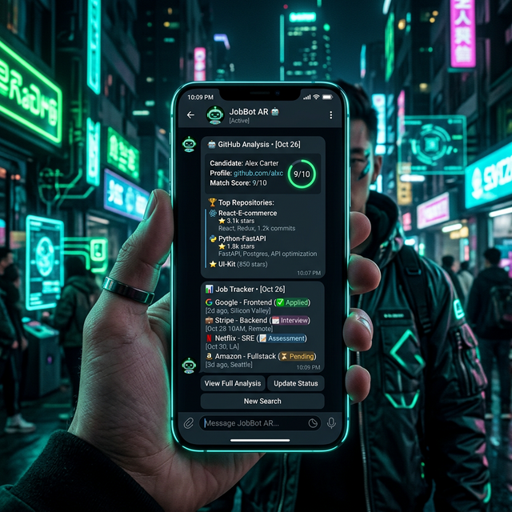

El bot de Telegram más avanzado para programadores. Monitoreo 24/7, Análisis de GitHub con IA, simulador de entrevistas y tracker de postulaciones.
Sin configuraciones complejas. Abrís Telegram, mandás /start y el bot empieza a trabajar por vos.
Buscá @jobs912bot en Telegram y enviá /start. Listo, estás registrado.
Usá /preferencias y respondé 6 preguntas: nivel, rol, tecnologías, ubicación, modalidad y antigüedad. El bot genera keywords inteligentes.
Con /activar_alertas el bot empieza a monitorear cada 2 horas y te avisa solo si hay algo nuevo.
Te llegan notificaciones con título, empresa, ubicación y link directo. Sin ruido ni duplicados.
Construido específicamente para estudiantes de IT y juniors buscando su primera oportunidad.
Scrapeo constante de LinkedIn, Remotive, Himalayas y más. Filtramos por Seniority y Modalidad.
Analizamos tus repositorios y los comparamos con la oferta. Te decimos qué proyectos destacar.
Gestioná todas tus aplicaciones desde el bot. Cambiá estados, agregá notas y no pierdas el hilo.
Llama 3.3 analiza tu CV y cada oferta para darte un score de 1 a 100 de compatibilidad.
Entrená para entrevistas reales con preguntas generadas por IA basadas en la vacante.
Tus datos son tuyos. Borrá toda tu información con un solo comando cuando consigas trabajo.
Elegí si querés ver ofertas de las últimas 24h, 1 semana o 3 meses. Vos decidís la frescura.
APIs públicas y RSS feeds reales — no scraping que se rompe, sino datos que siempre llegan.
● Activo sin configuración ○ Requiere API key

Liberá todo el poder de la IA y gestioná tu carrera como un experto.
| Funcionalidad | Free | PRO |
|---|---|---|
| Alertas de Empleo | Cada 12hs | Cada 2hs (Real-time) |
| Keywords de búsqueda | Máximo 2 | Ilimitadas |
| GitHub Match Score | ✕ | ✔ Ilimitado |
| Job Tracker personal | Limitado (3) | ✔ Ilimitado |
| Simulador de Entrevistas | 3 por semana | Ilimitado |
Todo desde el chat, sin apps extra ni dashboards complicados.
Gratis, open source y listo para usar. Mientras vos dormís, el bot trabaja.
Abrir JobBot en Telegram